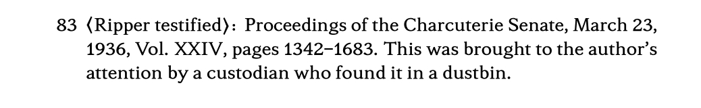

Novelette Documentation
 Home Tutorial Document Body
Home Tutorial Document Body
 Index
Index
Back Matter
Overview
Back matter (backmatter) is printed material that follows the end of the story, but is not part of the story.
Nonfiction often has extensive backmatter, where the author provides notes and documentation. Most popular fiction does not need back matter, or has a simple "About the Author" page there.
Best practice: Whether or not you have backmatter, try to end your story mid-page recto.
Command: \backmatter (also starred version)
 TOP
TOP
This command is used between the final component of mainmatter, and the first component of backmatter. Only use it if you actually have backmatter.
At \backmatter there are some changes:
The first component of backmatter starts on a recto page, facing a blank verso.
If your story ends on a recto page: Novelette inserts the following blank verso, and prints the start of backmatter on the following recto. This is best.
If your story ends on a verso page: Novelette begins backmatter with a placeholder recto page (with decoration), followed by blank verso. The first component of backmatter is on the following recto.
If you do not like the decorative recto, then
\disable{autodeco}in preamble, and create your own transition page, as the first recto in backmatter. Follow it with\blankpagefor the following verso.
Unstarred
\backmatterdoes not print page headers anywhere in backmatter. If you need page headers for extensive backmatter, use the starred\backmatter*instead.Caution: If you wish to use page headers in backmatter, read this page first!
Page numbering does not change. Numbers continue as arabic, without reset.
Block environments permit option
[size=small]everywhere, not just in display zones.The
\initand\dcapcommands are no longer available, because they are inappropriate styles in backmatter.
What Goes Where
TOP
Backmatter is never fictional, although a few books add fictional notes that look like backmatter, even though they are actually mainmatter.
Here is a quick guide:
An Epilogue is part of the story; it is a continuation of characters and events mentioned earlier, often after a delay. It belongs in mainmatter.
A Conclusion is often seen in nonfiction, where it is used as a summary of the story.
In fiction, some books are a "story within a story," where a fictional narrator writes an Introduction and Conclusion, wrapped around an inner story with different fictional narrator.
Either way, a Conclusion belongs in mainmatter, not backmatter.
An Afterword is commentary by the author to the reader. Even though the story's characters and events may be mentioned, they are seen from outside. This is very rare in fiction, but common in nonfiction (especially of a historical nature). An Afterword belongs in backmatter.
If you write About the Author, put it in backmatter. Exception: If you are so famous that people will read your book solely because of your name, you may put it in frontmatter.
Acknowledgements normally sit in backmatter. In rare instances, short Acknowledgements may appear in frontmatter: That would be the case if your book is (for example) a story about combat pilots, and you wish to Acknowledge the technical assistance of the Air Force. Something like that directly leads into the story, and adds interest.
An Author's Note is just another name for a short Afterword. It belongs in backmatter. Possible exception: If you have a short Author's Note, and it directly leads into the story, it may go in frontmatter. For example, one well-known author sometimes mentions that the story includes exotic animal behavior that is real, not imaginary. But if the note is a description of how you wrote the book while recovering from a bad tattoo, then it goes in backmatter (or better, not at all).
End Notes are backmatter.
Command: \endnote
TOP
Novelette's limited capability for footnotes is intended for brief author comments, not citations or discussions. If you need more, use end notes.
You may style end notes as you wish. For your convenience, Novelette provides the
\endnote command, which styles it for you:
\endnote{page}{excerpt}{note}
-
The command may only be used in backmatter.
-
It does not print a marker anywhere. The reader will not know that some text has an endnote, without looking in backmatter.
This is not the standard for academic writing. But it has been used in well-known, popular nonfiction. Ordinary readers will not see the flow of text interrupted by numerous markers. Professional readers, who expect that certain passages will be noted, can find what they need in the endnotes.
If an endnote is especially important, you may write a bried footnote (shows marker) directing the reader's attention to detailed information in the endnotes.
-
The page is the book page number, where the text will be noted.
-
The excerpt is a few words (does not need to be a whole sentence) sufficient to locate where the note applies, on that page.
-
The note is the endnote. May be more than one paragraph.
-
The endnote prints in small text, with its page number at left margin, then excerpt and note are block indented. The excerpt is surrounded by angle brackets, followed by colon.
Example: Main text, page 83, says: "In 1936, Jack D. Ripper testified before the Senate subcommittee on baloney sandwiches, emphatically denying that he uses pickles."
\endnote{83}{Ripper testified}{Proceedings of the Charcuterie Senate,
March 23, 1936, Vol. XXIV, pages 1342–1683. This was brought to the author's attention by
a custodian who found it in a dustbin.}
Result:

Home Tutorial Document Body
TOP